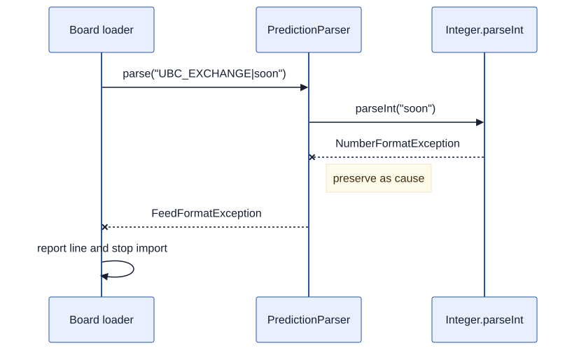

Exceptions, Testing, and Evidence
Exceptions name failed obligations, while tests turn specifications into bounded evidence.
The feed line is short:
UBC_EXCHANGE|soonOur parser expects a stop identifier, a vertical bar, and a non-negative number of minutes. UBC_EXCHANGE is a valid stop identifier, but soon cannot be parsed as an integer.
The parser must report this failure without creating a misleading prediction. Returning zero would claim that a bus is at the stop. Returning null would require every client to interpret the absence. Printing inside the parser would couple a reusable component to one user interface. A partially created prediction would leave the program in an invalid state.
Failures are part of a program's behaviour. We need to specify them, signal them at a useful abstraction level, and test them with the same care as ordinary results.
By the end of this chapter
- distinguish precondition violations, malformed external data, and failures of the execution environment;
- design, throw, propagate, catch, and chain Java exceptions;
- choose test cases by partitioning an input space and probing boundaries;
- write JUnit 6 tests for normal and exceptional behaviour;
- distinguish black-box tests from implementation-aware tests;
- explain why coverage and passing tests are evidence, not proof.
3.1Name the Failure at the Right Boundary
Our parser has this contract:
/**
* Parses {@code stop-id|minutes-until-arrival}.
*
* @param line one prediction line
* @return a prediction with a nonblank stop id and non-negative minutes
* @throws NullPointerException if {@code line} is null
* @throws FeedFormatException if the line does not contain exactly two fields,
* the stop id is blank, or the minutes field is not a non-negative integer
*/
public static ArrivalPrediction parse(String line) throws FeedFormatExceptionThe contract distinguishes two origins of failure.
Passing null violates our course's public API convention. The caller already has the reference and can obey the rule, so NullPointerException reports a programming error near its source.
Malformed text is different. Even a correct caller cannot know that a downloaded line contains soon until something parses it. The failure is an ordinary risk of crossing the feed boundary, so we give it a domain-specific name:
package ca.ubc.ece.cpen221.transit;
public final class FeedFormatException extends Exception {
public FeedFormatException(String message) {
super(message);
}
public FeedFormatException(String message, Throwable cause) {
super(message, cause);
}
}FeedFormatException is a checked exception because it extends Exception but not RuntimeException. Java requires a caller either to catch it or to declare that it may propagate. The type system therefore keeps the malformed-feed path visible in each calling contract.
That was a design choice rather than a universal rule. The statement "checked means expected; unchecked means bug" is too categorical. Java defines the categories by their class hierarchy and compiler rules. API designers choose between them based on client needs, recoverability, local conventions, and the cost of mandatory handling. A malformed command-line argument might reasonably produce an unchecked exception in one API and a result object in another.
3.2Parse in Small, Observable Steps
The companion project uses this parser:
package ca.ubc.ece.cpen221.transit;
import java.util.Objects;
public final class PredictionParser {
private PredictionParser() { }
public static ArrivalPrediction parse(String line) throws FeedFormatException {
Objects.requireNonNull(line, "line");
String[] fields = line.split("\\|", -1);
if (fields.length != 2) {
throw new FeedFormatException("expected stop-id|minutes: " + line);
}
try {
StopId stopId = new StopId(fields[0]);
int minutes = Integer.parseInt(fields[1]);
return new ArrivalPrediction(stopId, minutes);
} catch (IllegalArgumentException exception) {
throw new FeedFormatException("invalid prediction: " + line, exception);
}
}
}The -1 argument to split preserves an empty final field, so "UBC_EXCHANGE|" still produces two fields and reaches the integer check. Without it, Java would drop that trailing empty string. That small library detail decides which diagnostic the client sees, so it belongs in a test.
The parser delegates semantic checks to domain types. StopId rejects a blank identifier, and ArrivalPrediction rejects negative minutes:
package ca.ubc.ece.cpen221.transit;
import java.util.Objects;
public record ArrivalPrediction(StopId stopId, int minutesUntilArrival) {
public ArrivalPrediction {
Objects.requireNonNull(stopId, "stopId");
if (minutesUntilArrival < 0) {
throw new IllegalArgumentException(
"minutes until arrival must be non-negative");
}
}
}Those constructors throw IllegalArgumentException. At the text boundary, the parser translates that lower-level detail into FeedFormatException. It also passes the original exception as the cause. Clients can depend on the feed-level abstraction while a debugger or log retains the specific reason.
This is exception chaining. Dropping the cause would remove useful evidence; leaking every constructor exception would force feed clients to understand the parser's current implementation.
3.3Exceptions Change Control Flow
When Integer.parseInt("soon") throws, the rest of the try block does not execute. Java looks for a compatible catch in the current method. It finds one, constructs a FeedFormatException, and throws again. The caller then gets the same choice: catch or propagate.

A catch block should run where the program has enough context to take a meaningful action. A board loader might report the line number and reject the file. A user interface might show a message. The parser cannot decide either policy without becoming coupled to a particular client.
This catch is therefore suspicious:
try {
return PredictionParser.parse(line);
} catch (FeedFormatException exception) {
return null;
}It converts a named, documented failure into ambiguous absence and discards the diagnostic. An empty catch is worse: it tells the program to continue after hiding the fact that an obligation failed.
A useful handler must do at least one real job:
- recover by producing a valid alternative state;
- translate and rethrow at a more suitable abstraction level, preserving the cause;
- report and terminate the current operation at a boundary responsible for user or operational feedback.
Logging and rethrowing blindly can duplicate the same failure at every layer. Handle an exception once at the level that owns the response.
3.4Keep Resource Lifetimes Explicit
Parsing one string does not own an external resource. Loading a file does. Java's try-with-resources statement ties cleanup to the lexical scope that acquired the resource:
package ca.ubc.ece.cpen221.transit;
import static java.nio.charset.StandardCharsets.UTF_8;
import java.io.BufferedReader;
import java.io.IOException;
import java.nio.file.Files;
import java.nio.file.Path;
import java.util.ArrayList;
import java.util.List;
public final class PredictionFile {
private PredictionFile() { }
public static List<ArrivalPrediction> load(Path path)
throws IOException, FeedFormatException {
try (BufferedReader reader = Files.newBufferedReader(path, UTF_8)) {
List<ArrivalPrediction> predictions = new ArrayList<>();
String line;
while ((line = reader.readLine()) != null) {
predictions.add(PredictionParser.parse(line));
}
return List.copyOf(predictions);
}
}
}BufferedReader implements AutoCloseable, so Java calls close when control leaves the try, whether the body returns normally or throws. If both the body and close throw, the body's exception remains primary and the close failure is recorded as a suppressed exception.
This guarantee applies to execution within the JVM's normal control model. Process termination, a crashed runtime, or failed hardware can prevent cleanup. “Always” is too strong for systems claims; state the boundary of the guarantee.
3.5Derive Tests from the Contract
The parser's input space contains every possible Java string, so we cannot enumerate it. We need a systematic way to select a small set of informative cases.
Partitioning divides the input space into subdomains whose members we expect the program to treat similarly. Boundaries between partitions deserve special attention because comparisons and indexing often fail there.
The contract suggests these dimensions:
| Dimension | Partitions and boundaries |
|---|---|
| Field count | zero separators, exactly one, more than one |
| Stop identifier | blank, nonblank |
| Minutes syntax | integer text, empty, other text, decimal text |
| Minutes value | negative, zero, positive, Integer.MAX_VALUE, overflow text |
| Reference | null, non-null |
We do not need the Cartesian product of every row. Choose a compact set in which each test has a reason. Zero is especially useful because it is the boundary between invalid negative minutes and valid times.
The complete JUnit 6 test class begins like this:
package ca.ubc.ece.cpen221.transit;
import static org.junit.jupiter.api.Assertions.assertEquals;
import static org.junit.jupiter.api.Assertions.assertInstanceOf;
import static org.junit.jupiter.api.Assertions.assertThrows;
import org.junit.jupiter.api.Test;
class PredictionParserTest {
@Test
void parsesZeroMinutesAtBoundary() throws FeedFormatException {
ArrivalPrediction prediction = PredictionParser.parse("UBC_EXCHANGE|0");
assertEquals(new StopId("UBC_EXCHANGE"), prediction.stopId());
assertEquals(0, prediction.minutesUntilArrival());
}
@Test
void rejectsMissingMinutes() {
assertThrows(FeedFormatException.class,
() -> PredictionParser.parse("UBC_EXCHANGE|"));
}
@Test
void rejectsExtraField() {
assertThrows(FeedFormatException.class,
() -> PredictionParser.parse("UBC_EXCHANGE|4|EXTRA"));
}
@Test
void preservesCauseForNonnumericMinutes() {
FeedFormatException exception = assertThrows(FeedFormatException.class,
() -> PredictionParser.parse("UBC_EXCHANGE|soon"));
assertInstanceOf(NumberFormatException.class, exception.getCause());
}
@Test
void rejectsNegativeMinutes() {
assertThrows(FeedFormatException.class,
() -> PredictionParser.parse("UBC_EXCHANGE|-1"));
}
}Each test follows arrange–act–assert, even when the arrangement is only a string. The method name records the rationale, not the private branch it happens to execute.
The test for the cause checks a public diagnostic promise only if our contract makes cause preservation part of the API. If the contract merely promises FeedFormatException, insisting on NumberFormatException would couple the test to the current parsing technique. Tests must respect the same abstraction boundary as other clients.
3.6Black-Box and Glass-Box Evidence
A black-box test chooses inputs and observations from the specification alone. The partitions above are black-box partitions: any correct parser must handle those categories, regardless of its algorithm.
A glass-box test uses implementation knowledge to find additional executions. On seeing split("\\|", -1), we might add cases for a trailing separator and a separator at the beginning. On seeing Integer.parseInt, we might test text one greater than Integer.MAX_VALUE.
Glass-box insight is useful for finding neglected paths. The assertions still must describe public behaviour. We may use knowledge of a branch to reach it; we may not declare the branch itself part of the contract.
Coverage reports execution, not correctness
Coverage tools report which statements or branches a test run executed. A missed branch is a concrete prompt: why did no test reach it? One hundred percent coverage, however, says nothing about whether the assertions were meaningful.
This test can execute the parser and check almost nothing:
@Test
void executesParserWithoutCheckingResult() throws FeedFormatException {
PredictionParser.parse("UBC_EXCHANGE|4");
}It may improve a coverage number while failing to verify the returned stop or time. Coverage measures reach, not correctness or test quality.
One quick audit is to commit your work, introduce a small defect deliberately, and confirm that a relevant test fails. Change < 0 to <= 0, for example. If the suite still passes, it did not protect that boundary. Restore the change when the experiment is over.
3.7Assertions Are Not Argument Validation
Java's assert statement checks an internal belief:
assert fields.length == 2 : "field count checked above";When enabled, a false condition throws AssertionError. Java assertions are disabled by default and can be enabled with -ea. Therefore:
- never put a required side effect inside an assertion expression;
- never rely on an assertion to validate public input;
- use assertions for internal invariants that correct code should already establish.
JUnit's assertEquals and assertThrows are different methods in a testing library. They run as part of the test regardless of Java's -ea setting.
In our parser, explicit checks and exceptions enforce the public contract. An assertion after the field-count check could document an internal fact, but it adds little because the fact is already local and obvious. Use assertions for meaningful invariants rather than restating a check performed immediately before them.
3.8Design for Testability
PredictionParser.parse has a useful property: all input arrives through a parameter and all ordinary output leaves through a return value. It does not read a hard-coded file, consult the wall clock, modify global state, or print. A test can call it directly and observe the result.
PredictionFile.load owns file I/O separately. We can test the parser rapidly with strings and reserve a smaller set of integration tests for the file boundary. This separation is not a concession to the test framework. It is a modular design in which computation and effects have clear owners.
Our design principle is:
Design principle: make every failure an explicit part of a boundary, then derive evidence from that boundary's contract.
A named failure lets clients choose a response. A focused component makes that failure easy to provoke in a test. A test linked to a contract explains why its observation matters.
3.9Common Misconceptions
“Catch every exception so the program does not crash”
Catching an exception without restoring a valid state can make the system less reliable. It removes the signal while preserving the damage. Catch narrowly where you can recover, translate, or report; otherwise let the failure propagate.
Avoid catching Throwable or Error in ordinary application code. Errors such as OutOfMemoryError and StackOverflowError generally do not describe conditions from which a local method can sensibly recover.
“All tests pass, so there are no bugs”
Tests sample executions. They can demonstrate a violation when they fail, and they can increase confidence when well-designed cases pass. They cannot establish that an unexamined input, interleaving, environment, or requirement contains no defect.
The useful claim is specific: the implementation produced these observations for these contract-derived cases. That statement does not make claims about executions we did not test.
3.10Generated Parsers Need Adversarial Tests
A generated parser will often handle "UBC_EXCHANGE|4" correctly. Review should concentrate on the boundaries and failure cases:
- empty fields;
- extra separators;
- leading or trailing whitespace;
- negative and overflowing numbers;
- non-ASCII stop identifiers if the specification allows them;
- exception messages that leak or erase useful context.
Write the contract first, partition its inputs, and run the generated code against the boundaries. If the generator also writes the tests, inspect whether both artefacts made the same unsupported assumption. Agreement between generated code and generated tests is not independent evidence.
Try the Failure Paths
Predict the exception
For each call, name the first exception type visible to the caller and its likely cause, if any:
PredictionParser.parse(null)
PredictionParser.parse("|4")
PredictionParser.parse("UBC_EXCHANGE|2147483648")
PredictionParser.parse("UBC_EXCHANGE|-1")Trace control through the constructor or parsing call that fails.
Complete the partition
Add one test for a blank stop identifier and one for a positive arrival time. Explain which partition each represents and why neither duplicates an existing test.
Audit a catch block
A loader catches Exception, prints "bad feed", and returns an empty list. List the different failures this code conflates. Propose a policy for malformed content and a separate policy for a missing file.
Distinguish coverage from checking
The executesParserWithoutCheckingResult test executes the successful path. Write two assertions that would check the parser's public result. Then name one property that still remains untested.
Place responsibility
Should PredictionParser skip malformed lines, should PredictionFile skip them, or should the application reject the whole file? There is no universal answer. Choose a policy for an arrival board, write the corresponding contract, and explain which layer has enough context to implement it.
Summary
Exceptions give failures names and a separate control-flow path. Checked and unchecked exceptions differ by Java hierarchy and compiler treatment; choosing between them is an API design decision. Catch only where the program can recover, translate while preserving a cause, or report at an owning boundary. Use try-with-resources to tie resource cleanup to scope.
Tests turn contracts into executable observations. Partition the input space, probe boundaries, add implementation-aware cases without depending on private behaviour, and interpret coverage as a prompt for investigation. Passing tests provide evidence about tested executions; they do not prove that the program has no other bugs.
Our parser now produces records and lists, but those declarations alone do not make all reachable state immutable. A final field can still refer to a mutable object, and a returned list can give a client access to an object's representation. Chapter 4 examines those references.
Sources and provenance
This chapter was written anew for the Fall 2026 CPEN 221 notes. It preserves the old manuscript's emphasis on explicit failure, specification-derived testing, partitioning, boundaries, regression tests, and exception chaining. The chapter has a new outline, transit parser, tests, prose, and sequence diagram; it does not reuse the old birthday-book, substring-counting, or report-writer examples or any old image.
Technical references: